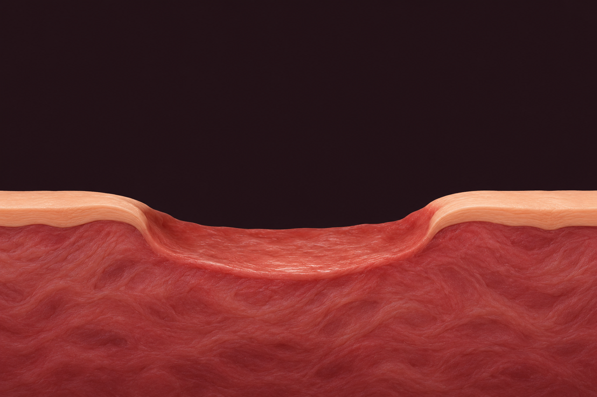
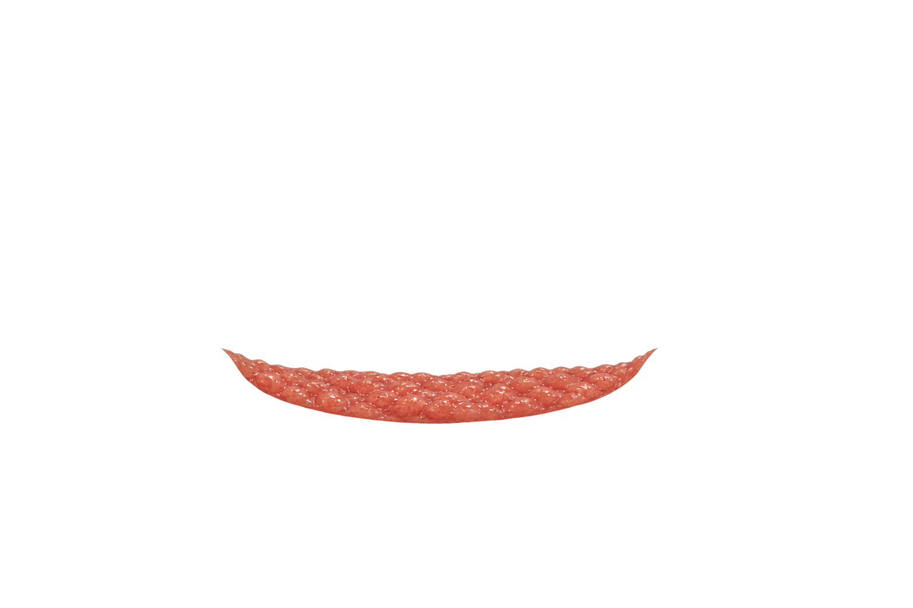

Limpieza adaptada
La herida, la piel y lo que necesita la persona.
IV Jornadas Comisión Heridas Jerez
20 añosÁrea de Gestión Sanitaria
Claustro de Santo Domingo · Jerez
Hola, soy Úrsula.
Qué no hacer en heridas crónicas
· Capítulo 10
Conversaciones con una herida


A revisar
La herida, la piel y lo que necesita la persona.
Infección o riesgo, tejido, dolor, alergias y objetivo.
Entrada